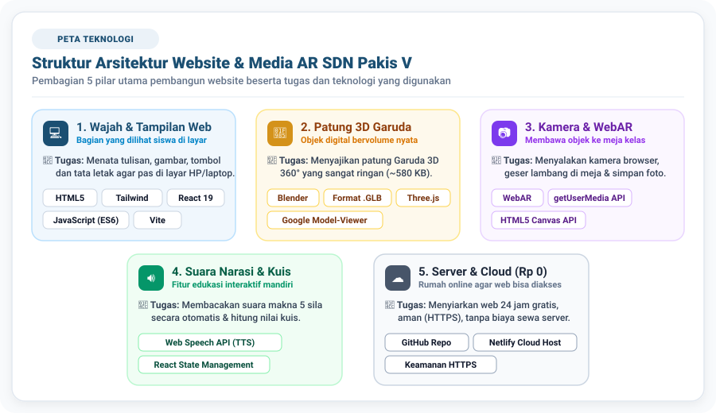
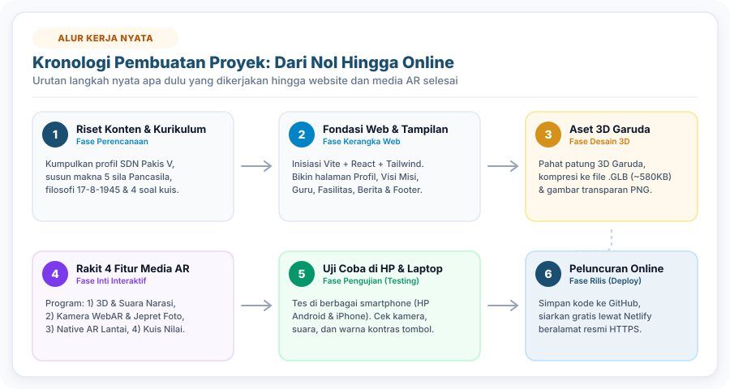
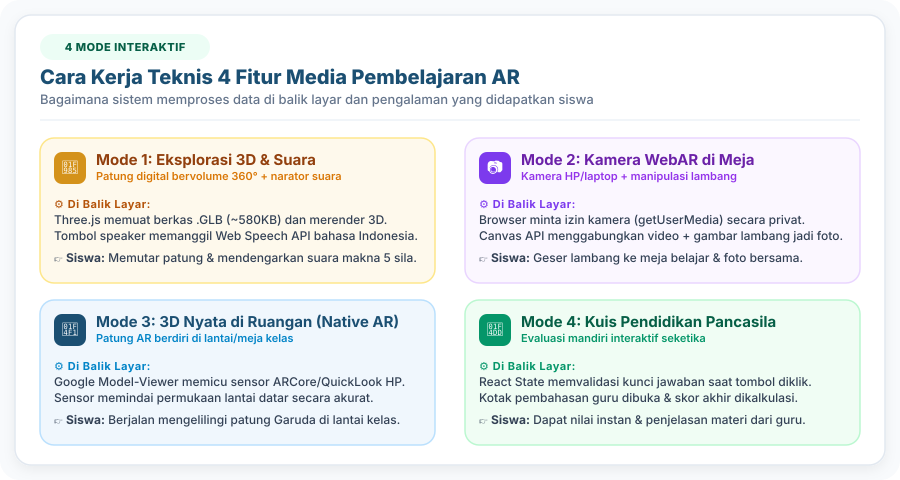

Website & Media Pembelajaran WebAR Garuda Pancasila
Dokumen penjelasan lengkap mengenai tujuan proyek, pengertian teknologi, cara pembuatan, alur kerja, panduan penggunaan, serta pemecahan masalah teknis pada website SDN Pakis V/372 Surabaya.
Nama Proyek
Web & Media AR SDN Pakis V
Materi Edukasi
Pendidikan Pancasila (Fase B/SD)
Inovasi Utama
Web Augmented Reality (WebAR)
1 Ringkasan Proyek & Tujuan Pembuatan Media
Apa Sebenarnya Proyek Ini?
Proyek ini merupakan pembuatan Website Resmi Profil SDN Pakis V Surabaya yang di dalamnya diintegrasikan sebuah modul inovasi khusus berupa Media Pembelajaran Interaktif Berbasis WebAR (Web Augmented Reality) dengan tema Lambang Negara Garuda Pancasila.
🎯 Latar Belakang & Masalah Nyata:
Pembelajaran materi lambang negara di Sekolah Dasar umumnya mengandalkan media cetak 2 dimensi (2D) di buku paket atau poster dinding kelas yang bersifat statis dan pasif. Menurut teori perkembangan kognitif Jean Piaget, siswa usia sekolah dasar (7–12 tahun) berada pada tahap operasional konkret. Mereka membutuhkan representasi visual yang nyata dan interaktif agar materi lambang negara tidak abstrak dan lebih mudah dipahami.
Solusi yang dihadirkan di website ini:
Website ini menghadirkan patung digital 3D Garuda Pancasila yang dapat diputar 360 derajat, dilengkapi pembaca suara narasi otomatis, serta dapat dimunculkan langsung ke dunia nyata melalui kamera HP atau laptop siswa tanpa perlu mengunduh aplikasi dari PlayStore/AppStore.
2 Daftar Lengkap Teknologi: Definisi Formal, Analogi & Fungsi di Web
Setiap teknologi di bawah ini disusun dengan struktur standar:
1. Definisi: Pengertian formal, teknis baku, dan to the point.
2. Analogi: Perumpamaan sederhana kehidupan sehari-hari agar mudah dibayangkan.
3. Fungsi di Website Ini: Tugas konkret teknologi tersebut pada website SDN Pakis V.

💡 Cara Membaca Diagram di Atas:
Website ini tidak dibuat dengan satu program tunggal, melainkan gabungan dari 5 pilar teknologi yang saling bekerja sama:
1. Wajah & Tampilan Web (Warna Biru): Mengatur apa yang dilihat dan disentuh siswa di layar HP (teks, tata letak, warna, dan tombol).
2. Patung 3D Garuda (Warna Kuning Emas): Mengolah patung burung Garuda agar bervolume 3D nyata dan dapat diputar 360°, namun ukurannya sangat ringan (~580 KB) sehingga hemat kuota.
3. Kamera & WebAR (Warna Ungu): Menyalakan kamera HP dan menempelkan lambang Garuda di meja belajar siswa tanpa install aplikasi.
4. Suara Narasi & Kuis (Warna Hijau): Mengubah teks menjadi suara ucapan bahasa Indonesia ramah anak dan menghitung nilai kuis secara otomatis.
5. Server & Cloud (Warna Abu/Slate): Komputer server di internet yang menyiarkan website selama 24 jam gratis (Rp 0 seumur hidup) dengan keamanan HTTPS.
A. Teknologi Tampilan Website (Frontend)
1. Website (Aplikasi Berbasis Web) Arsitektur
📋 Definisi:
Sistem informasi atau aplikasi digital yang diakses melalui jaringan internet menggunakan peramban web (web browser) dengan protokol HTTP/HTTPS tanpa memerlukan proses instalasi berkas pada media penyimpanan perangkat pengguna.
💡 Analogi Sederhana:
Seperti membaca surat kabar atau ensiklopedia daring; cukup dengan membuka alamat situsnya, seluruh isi informasi langsung tersaji tanpa perlu memasang aplikasi ke memori ponsel.
⚙️ Fungsi di Website Ini:
Siswa, guru, dan wali murid dapat langsung menggunakan media pembelajaran ini cukup dengan mengakses tautan URL atau memindai Kode QR tanpa dibebani keharusan mengunduh aplikasi sebesar ratusan megabyte dari PlayStore.
2. HTML5 (Hypertext Markup Language versi 5) Kerangka Dasar
📋 Definisi:
Bahasa markah standar industri yang digunakan untuk menyusun kerangka, hierarki struktural, dan konten dasar pada halaman web (seperti penataan teks, gambar, video, tombol, dan formulir).
💡 Analogi Sederhana:
Seperti kerangka tulang pada tubuh manusia, atau pondasi tiang cor dan susunan bata pada bangunan gedung.
⚙️ Fungsi di Website Ini:
Membentuk susunan struktur halaman, mulai dari penempatan judul teks, paragraf profil sekolah, deretan foto guru, wadah video kamera, hingga kanvas area penampil model 3D.
📋 Definisi:
CSS adalah bahasa lembar gaya (stylesheet language) yang digunakan untuk mengatur tampilan visual, format warna, tipografi, dan tata letak elemen pada halaman web yang ditulis dengan HTML. Tailwind CSS adalah kerangka kerja (framework) CSS berbasis kelas utilitas yang menyediakan pustaka aturan desain siap pakai untuk mempercepat pembuatan antarmuka modern yang responsif.
💡 Analogi Sederhana:
Jika HTML adalah dinding bata polos, maka CSS adalah cat warna, keramik lantai, lampu dekorasi, dan penataan perabot ruangan agar indah dipandang.
⚙️ Fungsi di Website Ini:
Menerapkan warna identitas sekolah (Biru Resmi dan Kuning Emas), memastikan ukuran huruf mudah dibaca anak SD, mengatur efek transisi animasi, serta memastikan tampilan web otomatis menyesuaikan ukuran layar (responsif) baik di layar HP, tablet, maupun proyektor laptop.
4. JavaScript (JS ES6+) Logika Pemrograman
📋 Definisi:
Bahasa pemrograman tingkat tinggi dan dinamis yang dieksekusi di sisi peramban (client-side) untuk menciptakan interaktivitas antarmuka, memproses logika data secara asinkron, dan merespons tindakan (event) pengguna secara langsung.
💡 Analogi Sederhana:
Seperti sistem saraf dan jaringan otot yang membuat tubuh dapat bergerak, berpikir, dan bereaksi terhadap stimulus dari luar.
⚙️ Fungsi di Website Ini:
Mengatur seluruh interaktivitas sistem—seperti menghitung perolehan skor kuis, mengaktifkan akses kamera, memicu suara narasi audio, serta merespons sentuhan jari siswa saat memutar objek 3D dan menggeser lambang di layar.
5. React 19 Pondasi Tampilan Berbasis Komponen
📋 Definisi:
Pustaka (library) JavaScript berbasis sumber terbuka yang dikembangkan oleh Meta (Facebook) untuk membangun antarmuka pengguna (User Interface) berbasis komponen modular yang reaktif terhadap perubahan data.
💡 Analogi Sederhana:
Seperti teknik menyusun balok mainan Lego; setiap balok memiliki fungsinya tersendiri dan dapat dirakit, dibongkar, atau diperbaiki secara mandiri tanpa merusak konstruksi balok di sebelahnya.
⚙️ Fungsi di Website Ini:
Membagi website menjadi komponen-komponen mandiri (komponen Profil, Berita, Eksplorasi 3D, Kamera AR, dan Kuis). Hal ini membuat website sangat stabil dan memudahkan pengembang ketika ingin memperbarui konten tanpa mengganggu bagian halaman lain.
6. Vite Mesin Perakit Kilat
📋 Definisi:
Alat bantu pengembangan (build tool & bundler) web generasi baru yang mengompilasi dan mengemas kode program dengan arsitektur modul ES asli (native ES modules), menghasilkan waktu muat server lokal dan berkas produksi akhir yang sangat cepat dan efisien.
💡 Analogi Sederhana:
Seperti mesin pengemas dan pengepres otomatis di pabrik modern yang merapikan ribuan barang produksi menjadi paket kecil yang ringkas dan siap didistribusikan dalam hitungan detik.
⚙️ Fungsi di Website Ini:
Mengompresi ribuan baris kode program dan aset grafis website agar dapat dimuat dalam hitungan milidetik saat diakses oleh siswa menggunakan koneksi internet sekolah.
📋 Definisi:
Pustaka komponen ikonografi vektor digital berbasis SVG (Scalable Vector Graphics) yang dirancang secara minimalis dan konsisten untuk kebutuhan antarmuka web modern.
💡 Analogi Sederhana:
Seperti rambu-rambu visual lalu lintas yang memandu pengguna memahami arti suatu fungsi tanpa harus membaca petunjuk teks yang panjang.
⚙️ Fungsi di Website Ini:
Menyediakan simbol visual yang ramah anak pada setiap tombol penting, seperti ikon kamera foto, pengeras suara, tombol rotasi 360°, tanda centang benar pada kuis, serta tanda panah navigasi.
B. Teknologi Pembuatan & Penampil 3D
1. Software Pemodelan 3D (Blender) Pemodelan Digital
📋 Definisi:
Perangkat lunak aplikasi grafis komputer tiga dimensi yang digunakan untuk merancang, memahat geometri (modeling), memetakan tekstur (texturing), dan mengatur pencahayaan (rendering) objek visual digital.
💡 Analogi Sederhana:
Seperti studio seni pemahat patung; tempat seniman membentuk patung dari tanah liat digital, mengukir lekukan sayap, dan mengoleskan cat warna emas hingga selesai.
⚙️ Fungsi di Website Ini:
Digunakan untuk memahat dan menyusun detail visual patung burung Garuda Pancasila—mencakup helai bulu sayap, ekor, cakar pita Bhinneka Tunggal Ika, serta perisai 5 sila di dada.
2. Format Berkas .GLB (glTF 2.0 / GL Transmission Format) Standar Patung Digital
📋 Definisi:
Format berkas biner standar internasional yang dirancang oleh Khronos Group untuk transmisi dan pemuatan aset 3D yang sangat efisien di peramban web dengan mengompresi data geometri (mesh), tekstur, dan material ke dalam satu berkas terpadu.
💡 Analogi Sederhana:
Seperti format file MP3 untuk rekaman musik atau MP4 untuk video; format standar yang paling ringkas, praktis, dan dapat dibuka di semua perangkat modern.
⚙️ Fungsi di Website Ini:
Menyimpan seluruh aset visual 3D patung Garuda ke dalam 1 berkas biner berukuran sangat kecil (hanya ~580 Kilobyte, di bawah 1 MB) sehingga sangat hemat kuota internet siswa dan tidak membuat HP panas.
3. Three.js Mesin Grafis 3D Web
📋 Definisi:
Pustaka grafis JavaScript tingkat tinggi yang memanfaatkan antarmuka pemrograman WebGL (Web Graphics Library) untuk merender adegan 3D interaktif yang terakselerasi oleh perangkat keras (hardware-accelerated) di dalam kanvas peramban web.
💡 Analogi Sederhana:
Seperti sistem tata panggung, lampu sorot, dan kamera bioskop yang bertugas mengatur sudut pandang, pencahayaan, dan bayangan patung agar terlihat nyata di depan penonton.
⚙️ Fungsi di Website Ini:
Menghitung pencahayaan matematis, efek kemilau keemasan, dan proyeksi kamera 3D di layar sehingga patung Garuda dapat diputar 360 derajat secara halus oleh jari siswa.
4. Google <model-viewer> Penampil 3D/AR Resmi Google
📋 Definisi:
Komponen web (Web Component) resmi dari Google yang mengimplementasikan standar WebXR untuk menampilkan model 3D di peramban web serta memfasilitasi peluncuran antarmuka Augmented Reality (AR) native pada perangkat bergerak (mobile devices).
💡 Analogi Sederhana:
Seperti pintu penghubung resmi antara halaman website dengan sensor kamera dan sensor gerak yang ada di smartphone siswa.
⚙️ Fungsi di Website Ini:
Menghubungkan website dengan sistem AR bawaan ponsel (Google ARCore di Android dan Apple QuickLook di iPhone), memungkinkan patung 3D Garuda diproyeksikan langsung berdiri tegak di lantai atau meja kelas nyata.
C. Teknologi Fitur Kamera & Augmented Reality (WebAR)
1. WebAR (Web Augmented Reality) Inti Inovasi
📋 Definisi:
Teknologi realitas tertambah (Augmented Reality) yang disajikan langsung melalui peramban web (web browser) menggunakan standar web terbuka tanpa mewajibkan pengguna mengunduh atau memasang aplikasi khusus dari toko aplikasi digital.
💡 Analogi Sederhana:
Seperti efek filter kamera interaktif di media sosial, di mana objek digital ditumpangkan langsung ke atas rekaman video dunia nyata di sekitar kita.
⚙️ Fungsi di Website Ini:
Menghadirkan lambang burung Garuda Pancasila langsung ke lingkungan fisik siswa (di atas meja kelas atau lantai sekolah) sehingga siswa dapat berinteraksi secara visual konkret.
2. WebRTC & API Akses Kamera (`getUserMedia`) Akses Sensor Kamera
📋 Definisi:
Spesifikasi antarmuka pemrograman JavaScript standar W3C yang memungkinkan halaman web meminta izin dan mengakses aliran data video (video stream) dari sensor perangkat keras kamera secara waktu nyata (real-time).
💡 Analogi Sederhana:
Seperti pintu pengawas yang meminta izin resmi kepada pemilik rumah sebelum menyalakan kamera dokumentasi.
⚙️ Fungsi di Website Ini:
Mengaktifkan kamera depan atau belakang HP/laptop saat siswa mengklik tombol "Nyalakan Kamera AR". Aliran video hanya diproses secara lokal di memori HP siswa (tidak ada video yang dikirim ke internet), sehingga 100% aman bagi privasi anak.
3. HTML5 <canvas> API Mesin Pengomposisi Foto
📋 Definisi:
Elemen antarmuka pemrograman web yang menyediakan ruang bidang gambar berbasis piksel bitmap, memungkinkan manipulasi grafis dinamis, perataan gambar (rendering), dan ekspor data visual ke format gambar berkas biner.
💡 Analogi Sederhana:
Seperti kertas cetak instan di dalam bilik foto (photo booth) yang merekatkan gambar latar belakang kamera dengan stiker lambang Garuda menjadi satu lembar foto cetak.
⚙️ Fungsi di Website Ini:
Menangkap rekaman video kamera ruangan dan menggabungkannya dengan lambang Garuda saat tombol "Foto Bersama AR" ditekan, lalu secara otomatis menyimpannya ke dalam bentuk file foto PNG di galeri HP siswa.
D. Fitur Audio, Logika Kuis & Server Cloud
1. Web Speech API (SpeechSynthesis / Text-to-Speech) Sintesis Suara
📋 Definisi:
Antarmuka pemrograman standar peramban web yang memfasilitasi sintesis suara (voice synthesis), mengonversi teks data digital menjadi aliran audio ucapan manusia secara otomatis menggunakan basis data suara bawaan sistem operasi.
💡 Analogi Sederhana:
Seperti narator buku audio yang membacakan naskah bacaan secara jelas kepada pendengar.
⚙️ Fungsi di Website Ini:
Membacakan teks filosofis makna 5 sila dan contoh penerapannya di sekolah menggunakan pelafalan bahasa Indonesia (id-ID) berintonasi ramah anak saat tombol speaker diklik, membantu siswa kelas rendah yang belum lancar membaca (gaya belajar auditori).
2. React State Management Pengelolaan Status Data
📋 Definisi:
Mekanisme internal React untuk mengelola, melacak, dan memperbarui status kondisi data dinamis aplikasi, serta memicu pembaruan rendering visual antarmuka secara otomatis saat terjadi perubahan data.
💡 Analogi Sederhana:
Seperti buku catatan memori otomatis dan papan skor digital yang langsung memperbarui catatan nilai pertandingan tanpa ada data yang terlupakan.
⚙️ Fungsi di Website Ini:
Menyimpan posisi tab yang sedang aktif, melacak koordinat pergeseran (drag) lambang Garuda di meja belajar, menghitung jumlah soal yang telah dijawab, serta mengkalkulasi skor akhir kuis secara langsung.
3. Git & GitHub Repositori Kode
📋 Definisi:
Git adalah sistem pengontrol versi (Version Control System) terdistribusi untuk mencatat riwayat perubahan kode sumber. GitHub adalah platform berbasis cloud yang menyediakan layanan penyimpanan repositori Git terpusat serta kolaborasi pengelolaan kode perangkat lunak.
💡 Analogi Sederhana:
Seperti lemari brankas digital dengan fasilitas mesin waktu yang mencatat setiap revisi berkas dokumen secara terperinci sehingga naskah proyek tersimpan aman dan tidak akan hilang.
⚙️ Fungsi di Website Ini:
Menyimpan seluruh kode sumber proyek (AbdulGhoni109/sdn-pakis-v) secara aman dan menghubungkannya secara otomatis ke sistem penerbitan cloud.
4. Netlify Cloud Hosting & Deployment Infrastruktur Server (Rp 0)
📋 Definisi:
Platform komputasi awan (cloud computing platform) yang menyediakan infrastruktur hosting berbasis jaringan terdistribusi (Edge Content Delivery Network), otomatisasi kompilasi kode (Continuous Deployment), serta manajemen sertifikat keamanan SSL/TLS untuk aplikasi web modern.
💡 Analogi Sederhana:
Seperti percetakan dan jaringan stasiun pemancar berita yang secara otomatis menyiarkan edisi terbaru majalah ke seluruh cabang perpustakaan di dunia setiap kali ada naskah yang baru selesai ditulis.
⚙️ Fungsi di Website Ini:
Menyiarkan website resmi SDN Pakis V selama 24 jam sehari dengan alamat web berkeamanan sertifikat gembok hijau (HTTPS) secara gratis (biaya pemeliharaan Rp 0 selamanya).
3 Alur Kronologis Pembuatan: Apa Dulu yang Dibangun, Lalu Kelanjutannya Bagaimana?
Berikut adalah penjelasan urutan nyata pembangunan proyek dari hari pertama hingga website terbit secara online:

💡 Cara Membaca Alur di Atas:
Pembangunan proyek ini berjalan teratur dalam 6 langkah utama:
Langkah 1 (Riset Konten): Mengumpulkan profil sekolah dan materi kurikulum Pancasila.
Langkah 2 (Fondasi Web): Membangun kerangka dan tampilan profil sekolah (React + Tailwind).
Langkah 3 (Aset 3D): Memahat patung digital Garuda dan mengompresinya menjadi ~580 KB.
Langkah 4 (Rakit 4 Fitur AR): Memprogram fitur 3D, suara narasi, kamera meja, dan kuis.
Langkah 5 (Uji Coba): Mengetes kamera dan tampilan di berbagai smartphone Android & iPhone.
Langkah 6 (Peluncuran): Menerbitkan website ke internet lewat GitHub & Netlify (Rp 0 selamanya).
Tahap 1: Perencanaan Materi Kurikulum & Profil Sekolah
Apa yang dibuat pertama kali? Mengumpulkan data profil resmi SDN Pakis V/372 Surabaya (Visi, Misi, data fasilitas, profil guru, berita sekolah, ekstrakurikuler, dan prestasi). Pada saat yang sama, materi kurikulum diselaraskan dengan Capaian Pembelajaran Pendidikan Pancasila Fase B (Kelas 4 SD) dalam Kurikulum Merdeka: menulis naskah makna 5 sila, contoh perilaku di sekolah, filosofi bulu kemerdekaan 17-8-1945, dan 4 butir soal evaluasi pemahaman anak.
Tahap 2: Pembuatan Fondasi & Struktur Dasar Web
Kelanjutannya: Menginisiasi (setup) proyek web di komputer lokal menggunakan Vite dan React 19. Memasang Tailwind CSS untuk standarisasi warna, tata letak, dan jenis font ramah anak (Plus Jakarta Sans). Menyusun struktur folder proyek secara rapi (folder komponen, folder halaman, folder data materi, dan folder aset publik untuk model 3D dan gambar).
Tahap 3: Pembuatan Halaman Informasi Profil Sekolah
Kelanjutannya: Membangun kerangka dan tampilan profil sekolah terlebih dahulu:
• Navbar: Menu navigasi atas yang rapi dan responsif.
• Beranda: Sambutan kepala sekolah dan foto sekolah.
• Profil, Fasilitas, Guru, Berita & Ekskul: Menyusun kartu-kartu informasi sekolah secara lengkap.
• Footer: Kontak resmi dan alamat SDN Pakis V Surabaya.
Tahap 4: Pemodelan & Kompresi Aset Patung 3D Garuda
Kelanjutannya: Sebelum fitur AR bisa diprogram, aset 3D-nya harus disiapkan terlebih dahulu. Patung 3D Garuda Pancasila diolah dan diwarnai tekstur emas, lengkap dengan perisai 5 sila di dada dan pita cengkeraman bertuliskan "Bhinneka Tunggal Ika". File dikompresi ke format standar web .glb dengan ukuran sangat ringkas (~580 KB). Disiapkan pula gambar resolusi tinggi berlatar belakang transparan (PNG dan SVG) untuk fitur kamera interaktif.
Tahap 5: Perancangan Basis Data Edukasi (`pancasilaData.js`)
Kelanjutannya: Membuat file data terstruktur yang memuat seluruh teks edukasi: data 5 sila (nama sila, bunyi, perisai, contoh perilaku, dan naskah narasi suara), data anatomi bulu 17-8-1945, serta data 4 soal kuis pilihan ganda lengkap dengan kunci jawaban dan kotak penjelasan guru.
Tahap 6: Pemrograman 4 Modul Fitur Pembelajaran Media AR
Kelanjutannya: Merakit halaman utama `MediaAR.jsx` beserta 4 komponen sub-fiturnya:
1. Mode 1 (ThreeDExplorer.jsx): Memasang patung 3D yang bisa diputar 360°, tombol 5 sila, dan Web Speech API untuk suara narasi otomatis bahasa Indonesia.
2. Mode 2 (WebcamARViewer.jsx): Memprogram aktivasi kamera browser (getUserMedia), meletakkan lambang Garuda di atas rekaman video kamera secara live, membuat logika sentuh/geser (drag), slider ukuran & rotasi, tombol efek cahaya emas, serta tombol jepret foto menggunakan Canvas API yang langsung tersimpan di galeri HP.
3. Mode 3 (NativeModelViewer.jsx): Memasang Google Model-Viewer untuk memproyeksikan patung 3D berdiri di lantai atau meja kelas nyata melalui sensor ARCore/QuickLook smartphone, lengkap dengan Kode QR akses cepat.
4. Mode 4 (PancasilaQuiz.jsx): Membangun kuis interaktif 4 butir soal dengan umpan balik benar/salah instan, penjelasan materi, dan penghitungan skor akhir otomatis.
Tahap 7: Integrasi Modul AR ke Navigasi Website Utama
Kelanjutannya: Memasukkan komponen Media AR ke dalam file induk `App.jsx`, diletakkan tepat di antara seksi Profil Sekolah dan seksi Berita. Menambahkan tautan "Media AR" di Navbar atas dan Footer agar dapat diakses dalam sekali klik.
Tahap 8: Pengujian di Berbagai Perangkat (Testing)
Kelanjutannya: Mengetes website di laptop (Chrome, Safari, Edge) dan berbagai smartphone Android serta iPhone. Memastikan kamera belakang langsung menyala dengan lancar, teks dapat terbaca jelas dengan kontras warna yang tinggi (misal: tombol kamera berwarna kuning emas dengan tulisan hitam pekat), serta tombol mudah disentuh oleh jari anak-anak.
Tahap 9: Peluncuran ke Internet Melalui GitHub & Netlify (Deploy)
Kelanjutannya (Tahap Akhir): Seluruh berkas proyek dikirim ke repositori GitHub dan dihubungkan ke server cloud Netlify. Netlify secara otomatis merakit website dan menyiarkannya ke alamat web resmi berkeamanan HTTPS yang bisa dibuka gratis 24 jam oleh siswa kapan pun dari rumah.
4 Cara Kerja Teknis Setiap Fitur AR (Di Balik Layar)
Berikut adalah ringkasan alur pemrosesan data di balik layar pada masing-masing fitur:

💡 Cara Membaca Panel di Atas:
Setiap mode belajar memiliki fungsi dan cara kerja khusus:
Mode 1 (Eksplorasi 3D): Memuat patung digital 3D dan membacakan teks dengan suara wanita Indonesia.
Mode 2 (Kamera Meja): Mengaktifkan kamera HP dan menempelkan lambang Garuda di meja belajar serta bisa difoto.
Mode 3 (3D Nyata di Ruangan): Menggunakan sensor canggih HP untuk mendeteksi lantai/meja sehingga patung Garuda berdiri tegak di ruangan nyata.
Mode 4 (Kuis Nilai): Memvalidasi jawaban benar/salah secara instan dan menampilkan pembahasan guru serta skor akhir (0–100).
Fitur AR
Cara Kerja Pemrosesan di Balik Layar
Pengalaman Siswa di Layar
Mode 1: Eksplorasi 3D & Suara
Browser memuat file .glb → Three.js merender ruang 3D → Event sentuhan memutar sudut kamera → Tombol speaker memanggil window.speechSynthesis.
Patung Garuda bisa diputar 360 derajat dan terdengar suara ramah membacakan makna sila.
Mode 2: Kamera WebAR Interaktif
Browser meminta izin video kamera lokal → Gambar transparan Garuda ditumpangkan di atas video → Canvas API menggabungkan video + gambar saat tombol foto diklik.
Siswa melihat lambang Garuda di meja belajarnya, bisa menggeser, memperbesar, dan memotret hasilnya ke galeri.
Mode 3: 3D Nyata di Ruangan
Google Model-Viewer mengakses sensor ARCore/QuickLook di HP → Sensor mendeteksi bidang datar (meja/lantai) → Patung 3D diposisikan pada koordinat nyata ruang kelas.
Patung 3D Garuda berukuran nyata berdiri tegak di lantai kelas dan bisa dikelilingi secara fisik.
Mode 4: Kuis Pendidikan Pancasila
React State menyimpan indeks soal dan jawaban → Sistem memvalidasi benar/salah secara instan → Menampilkan kotak pembahasan guru → Mengkalkulasi nilai skor akhir (0–100).
Siswa belajar mandiri dengan penilaian otomatis dan penjelasan guru yang interaktif.
5 Panduan Lengkap Penggunaan Fitur AR (Untuk Guru & Siswa di Kelas)
Berikut adalah panduan operasional langkah demi langkah saat memanfaatkan menu Media AR di dalam proses pembelajaran:
Mode 1: Eksplorasi 3D & Suara
Tujuan Pembelajaran: Mengamati bentuk fisik patung Garuda secara menyeluruh dari segala sisi dan mendengarkan penjelasan audio.
Buka menu "Media AR" lalu pilih tab "Eksplorasi 3D & Suara".
Gunakan jari di layar HP (atau kursor mouse di laptop) untuk memutar patung Garuda ke segala arah (360 derajat). Cubit layar dengan 2 jari untuk memperbesar objek (zoom in).
Klik salah satu dari 5 lambang sila di bagian bawah layar (Bintang, Rantai, Beringin, Banteng, Padi & Kapas).
Baca makna lambang dan contoh pengamalannya di lingkungan sekolah.
Klik tombol speaker "Dengarkan Narasi Suara" agar website membacakan penjelasan materi dengan suara ramah anak secara otomatis.
Klik tab "Anatomi 17-8-1945" untuk mempelajari rahasia jumlah bulu kemerdekaan pada sayap, ekor, dan leher Garuda.
Mode 2: Kamera WebAR Interaktif
Tujuan Pembelajaran: Menghadirkan lambang Garuda tepat di atas meja belajar siswa menggunakan kamera dan mengambil foto hasil karya belajar.
Pilih tab "Kamera WebAR Interaktif" lalu klik tombol emas "Nyalakan Kamera AR".
Ketika muncul pertanyaan izin di browser: "Izinkan website mengakses kamera Anda?", klik "Izinkan" (Allow).
Arahkan kamera HP ke meja belajar atau lantai kelas.
Lambang Garuda akan tampil melayang di layar:
• Geser posisi: Sentuh dan geser lambang Garuda ke area meja yang diinginkan.
• Atur ukuran: Geser slider ukuran untuk membesarkan atau mengecilkan lambang.
• Atur rotasi: Geser slider derajat rotasi untuk memutar kemiringan lambang.
• Efek cahaya: Centang opsi efek cahaya emas agar lambang berpendar cerah.
Klik tombol hijau "Foto Bersama AR" untuk menjepret gambar. Hasil foto akan langsung terunduh ke galeri HP/laptop sebagai bukti tugas belajar.
Jika perangkat tidak memiliki kamera (misal di lab komputer lama), siswa dapat menekan tombol "Gunakan Simulasi Meja" untuk tetap belajar dengan latar belakang meja virtual.
Mode 3: 3D Nyata di Ruangan (Native AR HP)
Tujuan Pembelajaran: Memproyeksikan patung 3D Garuda berdimensi nyata berdiri di lantai kelas menggunakan sensor AR smartphone.
Buka website di smartphone (siswa dapat memindai Kode QR yang ada di layar laptop guru untuk membuka tautan secara instan).
Pilih tab "3D Nyata di Ruangan" lalu klik tombol "📱 Tampilkan AR di Ruangan Nyata".
Kamera HP akan membuka mode AR:
• Arahkan kamera HP ke lantai atau meja kelas yang datar dan berpenerangan cukup.
• Gerakkan HP perlahan memutar agar sensor mengenali permukaan lantai/meja.
• Patung 3D Garuda berukuran nyata akan muncul berdiri tegak di atas meja atau lantai kelas.
• Siswa dapat berjalan mengelilingi meja untuk melihat patung Garuda dari depan, samping, dan belakang seolah-olah patung tersebut ada di kelas.
Mode 4: Kuis Pendidikan Pancasila
Tujuan Pembelajaran: Melakukan evaluasi pemahaman mandiri setelah mengeksplorasi materi.
Pilih tab "Kuis Pendidikan Pancasila".
Baca pertanyaan dan pilih salah satu pilihan jawaban (A, B, C, atau D).
Website akan langsung memberi warna hijau jika jawaban benar atau merah jika salah, lengkap dengan Kotak Penjelasan Guru yang menerangkan alasan jawaban tersebut.
Setelah menyelesaikan 4 soal, kartu nilai akan muncul menampilkan skor perolehan siswa (skala 0–100) dan tombol untuk mengulangi kuis jika diperlukan.
6 Tanya-Jawab Teknis, Pemecahan Masalah (Troubleshooting) & Biaya Perawatan
❓Bagaimana jika kamera HP tidak mau menyala saat tombol diklik?
Penyebab: Pengguna biasanya tidak sengaja menekan tombol "Blokir" saat browser meminta izin kamera, atau izin kamera di aplikasi Google Chrome HP belum diaktifkan. Solusi: Di browser HP (Google Chrome), klik ikon pengaturan di sebelah kiri alamat web (URL), pilih Izin (Permissions) → Kamera (Camera), lalu ubah statusnya menjadi Izinkan (Allow). Setelah itu muat ulang (refresh) halaman web dan tekan kembali tombol nyalakan kamera.
❓Apakah media ini bisa digunakan di HP lama yang tidak memiliki sensor AR canggih?
Sangat bisa. Inilah alasan utama mengapa media ini dirancang dengan 4 mode belajar berbeda:
Jika HP siswa belum memiliki sensor AR ruang (Mode 3), siswa tetap dapat belajar dengan lancar menggunakan Mode 1 (Eksplorasi 3D & Suara) dan Mode 2 (Kamera WebAR Interaktif) yang kompatibel dengan 99% semua jenis smartphone berlayar sentuh. Bahkan jika siswa tidak memegang HP sama sekali di kelas, guru dapat memandu pembelajaran menggunakan 1 laptop dan proyektor kelas.
❓Apakah website ini boros kuota internet siswa?
Sangat hemat. Semua aset grafis dan model 3D di website ini telah dikompresi secara maksimal. Patung 3D Garuda hanya berukuran sekitar ~580 KB (kurang dari 1 MB), jauh lebih kecil dibandingkan membuka 1 foto di aplikasi Instagram (yang rata-rata memakan kuota 2–5 MB). Sekali website dibuka, seluruh halaman akan tersimpan di memori sementara (cache) browser sehingga pembukaan berikutnya berjalan instan tanpa menyedot kuota lagi.
❓Apakah pihak sekolah harus mengeluarkan biaya langganan bulanan atau tahunan?
Sama sekali tidak ada biaya (100% Gratis Seumur Hidup / Rp 0). Server siar cloud Netlify menggunakan paket gratis selamanya, repositori kode tersimpan gratis di GitHub, dan suara narasi otomatis menggunakan Web Speech API bawaan perangkat pengguna tanpa melibatkan API berbayar dari pihak luar. Tidak ada biaya perawatan bulanan yang membebani kas sekolah.
📌 Kesimpulan:
Website dan Media Pembelajaran WebAR SDN Pakis V ini berhasil memadukan teknologi modern (React, Model 3D, WebAR, Text-to-Speech) ke dalam balutan media edukasi yang sederhana, mudah dipahami anak sekolah dasar, mudah digunakan oleh guru di kelas, serta tidak membebani anggaran sekolah.